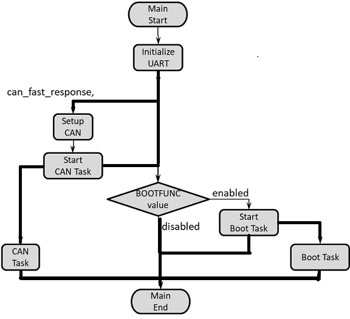
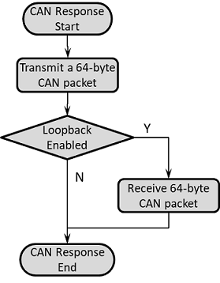
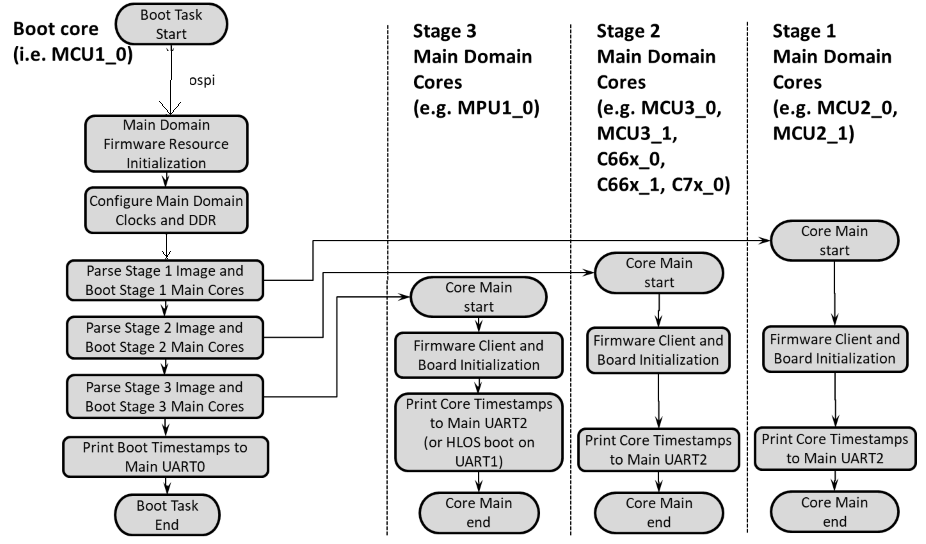
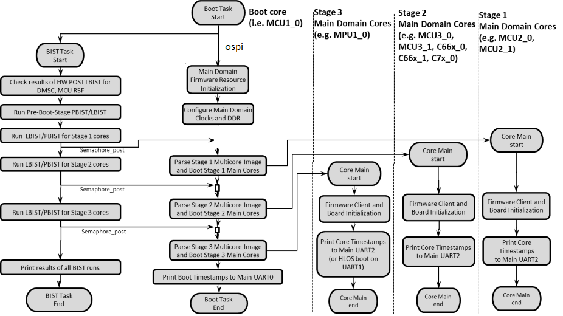
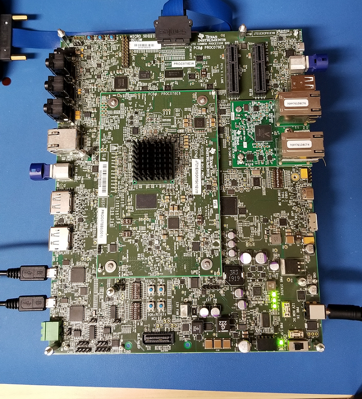
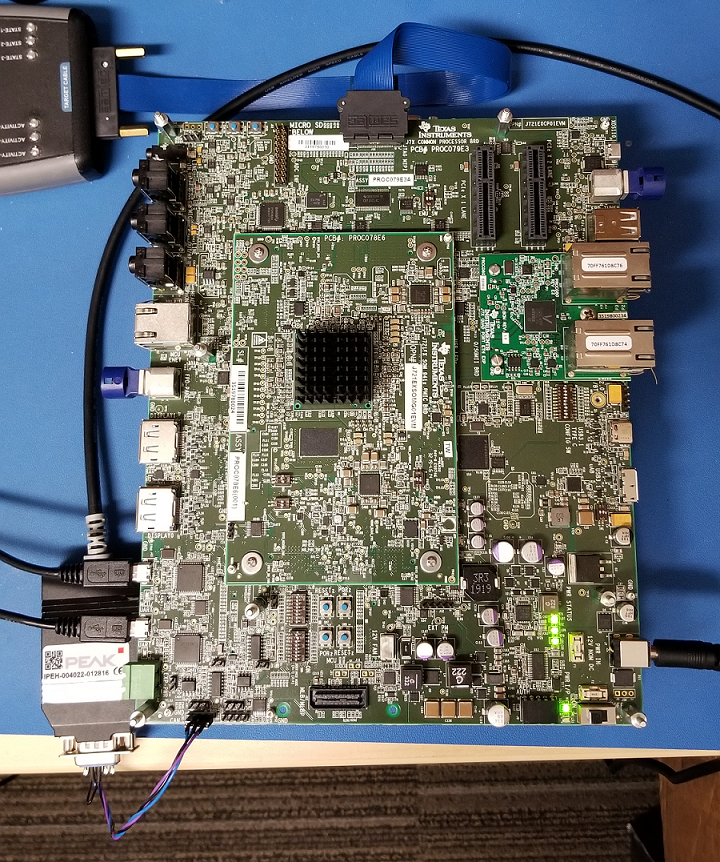

|
MCUSW
|
|
MCUSW
|
This application demonstrates the fast boot capability provided by the Octal SPI flash controller on Jacinto SoCs. The application performs the following actions:
This facilitates an early CAN response feature, typically required in an automotive ECU, followed by booting of the main domain cores on the SoC.
Please refer to the data sheets for early CAN response
This application depends on multiple components:
Back To Top
This application depends on the Secondary Boot Loader (SBL) component from Processor SDK RTOS. For further details on the SBL, please refer to the Platform Development Kit (PDK) documentation on the SBL component for this release.
The following flow chart displays the main application on the MCU1_0, which can spawn up to 2 current tasks.

The following flow chart displays the functionality of the CAN task if the CAN function is set to "can_fast_response".

The following flow chart displays the functionality of the Boot task, as well as the applications started on the main domain cores.

The following flow chart displays the functionality of the Boot task when run along with BIST (as well as the applications started on the main domain cores). Note that the default build of this application disables the BIST thread shown below, and BISTFUNC flag must be enabled in the build for BIST to be run.

Back To Top
| For TX Only | Flag Value | Location |
|---|---|---|
| APP_INSTANCE_1_INST_IN_CFG_ONLY | STD_ON | mcuss_demos/boot_app_mcu_rtos/can_resp.h AND mcuss_demos/boot_app_mcu_rtos/can_profile.h |
| CAN_LOOPBACK_ENABLE | STD_OFF | mcuss_demos/mcal_config/Can_Demo_Cfg/output/generated/soc/$SOC/mcu1_0/include/Can_Cfg.h |
| CAN_TX_ONLY_MODE | STD_ON | mcuss_demos/boot_app_mcu_rtos/can_resp.h AND mcuss_demos/boot_app_mcu_rtos/can_profile.h |
| Loopback | Flag Value | Location |
|---|---|---|
| APP_INSTANCE_1_INST_IN_CFG_ONLY | STD_OFF | mcuss_demos/boot_app_mcu_rtos/can_resp.h AND mcuss_demos/boot_app_mcu_rtos/can_profile.h |
| CAN_LOOPBACK_ENABLE | STD_ON | mcuss_demos/mcal_config/Can_Demo_Cfg/output/generated/soc/$SOC/mcu1_0/include/Can_Cfg.h |
| CAN_TX_ONLY_MODE | X | mcuss_demos/boot_app_mcu_rtos/can_resp.h AND mcuss_demos/boot_app_mcu_rtos/can_profile.h |
Back To Top



We need have the following binaries built from Platform Development Kit (PDK):
Apart from the above binaries, we need to build the can_boot_app_mcu_rtos that the SBL copies from OSPI, and does the following:
Go to pdk/packages/ti/build and run the following w/ $board set accordingly:
``` make -j BOARD=$board CORE=mcu1_0 BUILD_PROFILE=release sbl_boot_perf_cust_img ```
NOTE: For Early CAN response with the fastest boot time, you can pre-configure the SBL flags before building sbl_boot_perf_cust_img by modifying the CUST_SBL_BOOT_PERF_TEST_FLAGS in the file pdk/packages/ti/boot/sbl/sbl_component.mk. Just search for this line and un-comment it (and comment out similar lines below it), then save and build sbl_boot_perf_cust_img.
Go to mcusw/build and run the following w/ $board and $soc set accordingly:
``` make -s -j can_boot_app_mcu_rtos BOARD=$board SOC=$soc BUILD_PROFILE=release CORE=mcu1_0 BUILD_OS_TYPE=freertos ```
The output appimage "can_boot_app_mcu_rtos_mcu1_0_release.appimage" will be placed in mcusw/binary/can_boot_app_mcu_rtos/bin/$board directory.
To run the main domain applications on all the main domain cores, flash the following binaries in OSPI memory at the respective offsets (in hex) as given below:
J721E, J721S2, J784S4:
NOTE: {BOARD} and {X} needs to be substituted accordingly.
J7200:
Refer Uniflash Programming Guide to learn how to program the binaries at the respective offset in the flash.
Back To Top
Below is the log for CAN Boot App (J721E) when CAN is configured in loop-back mode, and all main domain cores run some application:
CAN Response App:NOTE : Operating in internal loop-back mode CAN Response App:Message Id Received 800000c0 Message Length is 64 CAN Response App:Test completed for 0 instance CAN Response App:NOTE : Operating in internal loop-back mode CAN Response App:Message Id Received 800000b0 Message Length is 64 CAN Response App:Test completed for 1 instance C OSPI NOR device ID: 0x5b1a, manufacturer ID: 0xCAN Response App: 8192 bytes used for stack CAN Response App: 8192 bytes used for stack CAN Response App:Early CAN completed!!! Boot App: Started at 347 usec Boot App: Total Num booted cores = 8 Boot App: Booted Core ID #6 at 294663 usecs Boot App: Booted Core ID #7 at 294937 usecs Boot App: Booted Core ID #8 at 311442 usecs Boot App: Booted Core ID #9 at 311717 usecs Boot App: Booted Core ID #10 at 312044 usecs Boot App: Booted Core ID #11 at 312372 usecs Boot App: Booted Core ID #12 at 312807 usecs Boot App: Booted Core ID #0 at 319346 usecs MCU Boot Task started at 345 usecs and finished at 1931335 usecs
Back To Top
| Revision | Date | Author | Description | Status |
|---|---|---|---|---|
| 0.1 | 16 Apr 2019 | Somnath | Initial Version | Approved |
| 0.2 | 8 Aug 2019 | Sunil M S | Updates logs for release 00.09.01 | Approved |
| 0.3 | 30 Jan 2020 | Danny Jochelson | New Version For TIRTOS Boot App | Approved |
| 0.4 | 4 Feb 2020 | Jonathan Bergsagel | Updated for CAN boot app CAN response compile options | Approved |
| 0.5 | 17 Feb 2020 | Sujith S | Re Organized the document | Approved |
| 0.6 | 28 May 2020 | Jonathan Bergsagel | Updated CAN boot app instructions for 7.0 SDK release | Approved |
| 0.7 | 22 Sept 2020 | Danny Jochelson | Updated CAN boot app to include BIST task, Updated Boot Task to show staged image parsing | Approved |
| 0.8 | 4 Nov 2020 | Jonathan Bergsagel | Updated instructions to include J7200 support, and new OSPI flash memory layout for images | Approved |
| 0.9 | 17 Nov 2020 | Jonathan Bergsagel | Removed prior issue on booting Linux. Boot App enables an optimized Linux boot flow | Approved |
 1.8.6
1.8.6